第 9 讲：来自社区的声音——动画系统进阶
从动画混合、状态机、Blend Tree 到 IK、面部动画与重定向，讲清让角色动得自然的一整套技术。
◆ 学完这一讲，你应该能
理解动画混合（Blend）的数学本质：用 LERP 在多个动画片段之间插值，并会计算混合权重。
掌握 1D/2D Blend Space 的构造与使用场景，能把速度、方向等游戏参数映射为混合权重。
理解骨骼遮罩混合（Skeleton Masked Blending）与叠加混合（Additive Blending）的区别与用途。
能描述动作状态机（ASM）的节点、过渡与交叉淡入淡出（Cross Fade），并知道 UE 动画蓝图如何对应。
理解 Blend Tree 的树形结构，能把分层 ASM 表达成一棵混合树。
掌握 IK 的基本概念（End-effector、两骨骼 IK、CCD、FABRIK、Jacobian），知道各自适用场景与局限。
了解面部动画的 FACS、Morph Target、UV 纹理动画与肌肉模型，以及动画重定向的基本流程与坑。
核心结论速记
动画混合的本质是对多个姿态做加权平均（LERP），权重由游戏参数（速度、方向等）驱动。
Blend Space 把一维或二维的输入参数映射到多个动画片段的权重，是移动类动画的标准做法。
骨骼遮罩混合让不同身体部位播放不同动画；叠加混合把差异片段加到基础片段上，适合点头、呼吸等叠加动作。
动作状态机（ASM）用节点和过渡管理有状态的动画切换，交叉淡入淡出解决切换时的跳变。
Blend Tree 用树形结构组织混合操作，终端节点是 Clip/Blend Space/ASM，非终端节点是 LERP、Additive 等混合节点。
IK 用运动学方程反解关节旋转，使末端执行器到达目标位置；两骨骼 IK 有解析解，多关节 IK 常用 CCD、FABRIK 或 Jacobian 迭代。
面部动画可用 FACS 动作单元 + Morph Target 实现，也可用 UV 纹理或肌肉模型；重定向让动画在不同骨架间复用，但需处理偏移、朝向和脚部锁定。
011. 为什么需要动画混合：从简单动画到真实游戏
课件一开始展示了几张社区同学做的滤镜效果（卡通滤镜、暗角、径向模糊），然后切入正题：真实游戏里的动画远比“播放一个片段”复杂。
简单动画就是播放一个 Clip；但真实游戏中，角色要走路、跑步、转弯、跳跃、鼓掌、点头……这些动作不能靠一个个独立片段硬切，否则会出现跳变、不自然。于是需要一套受控的动画混合系统，让多个片段共同贡献最终姿态。
动画混合（Animation Blending）的定义是：允许两个或更多动画片段共同影响最终姿态的技术。最核心的数学工具就是线性插值（LERP）：
\[ \text{Pose}_{\text{out}} = (1 - w) \cdot \text{Pose}_A + w \cdot \text{Pose}_B \]
其中 \(w\) 是混合权重，通常由游戏参数（如角色速度）控制。注意：姿态的插值一般对每个骨骼的旋转用四元数球面插值（Slerp）或归一化线性插值（Nlerp），对位移用线性插值。
这一讲的主线就是：混合 → 状态机 → Blend Tree → IK → 面部动画 → 重定向，层层递进，最终拼出一个完整的动画管线。
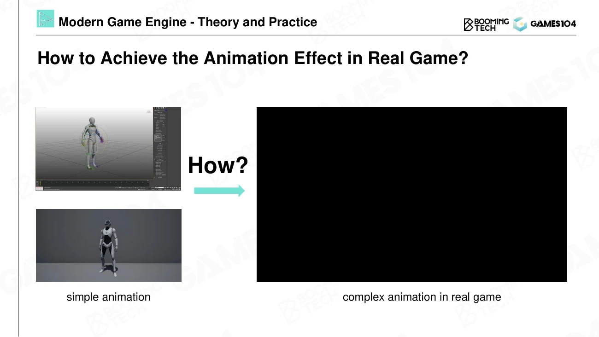
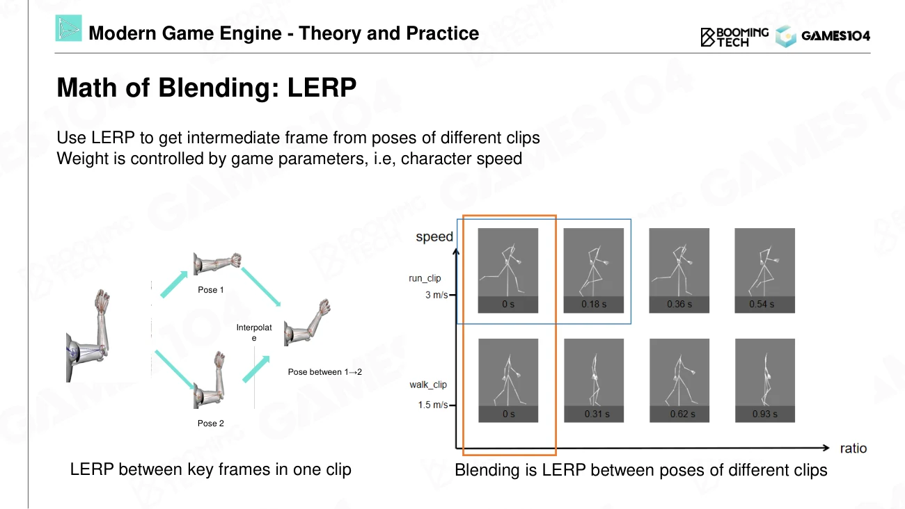
常见坑
直接对旋转矩阵做线性插值 → 结果不是正交矩阵，姿态扭曲 → 应使用四元数 Slerp/Nlerp。
权重之和不为 1 → 姿态缩放或偏移 → 混合前确保权重归一化。
UE / Unity 落地
UE 的动画蓝图（Animation Blueprint）中，Layered blend per bone、Blend Poses 等节点就是 LERP 混合的封装。
Unity 的 Animator 中，Blend Tree 的 1D/2D 混合本质也是 LERP。
022. 混合权重怎么算：以走路到跑步为例
课件用“走路到跑步”的案例讲权重计算。假设走路速度 1.5 m/s，跑步速度 5.0 m/s，当前速度 \(v\) 在两者之间，则跑步片段的权重为：
\[ w_{\text{run}} = \frac{v - v_{\text{walk}}}{v_{\text{run}} - v_{\text{walk}}} \]
走路片段的权重为 \(1 - w_{\text{run}}\)。当 \(v \le v_{\text{walk}}\) 时 \(w_{\text{run}}=0\)，当 \(v \ge v_{\text{run}}\) 时 \(w_{\text{run}}=1\)，中间线性过渡。
时间轴对齐（Align Blend Timeline）：两个片段的播放时间要同步，否则混合时脚会“打架”。常用做法是按当前混合空间的 delta time 去推进各片段的播放时间，并让片段的归一化时间（0~1）保持一致。
课件还指出：为了效果好，需要大量中间速度的动画片段，这通常由动画师制作或动捕得到。片段越多，过渡越平滑，但资源也越多。
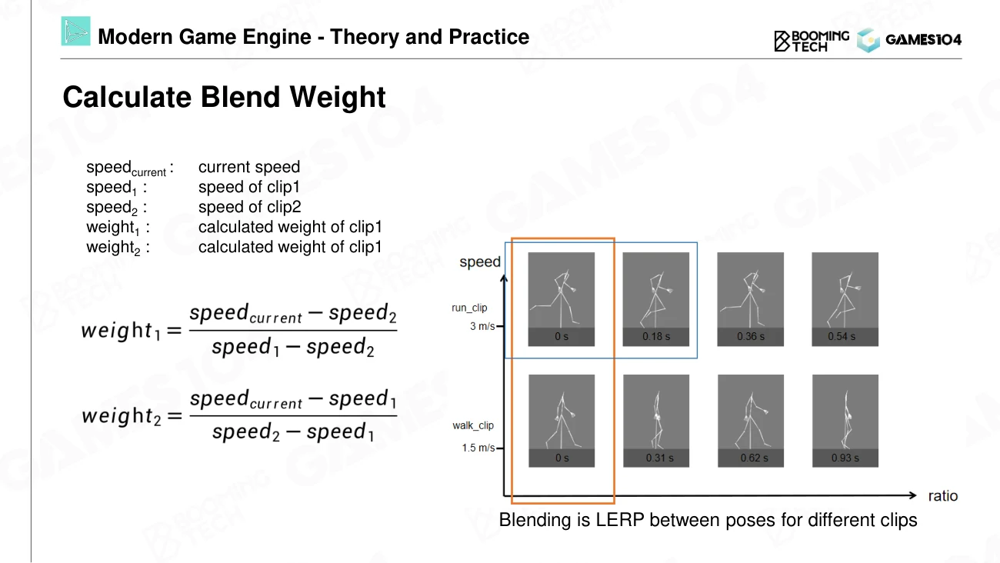
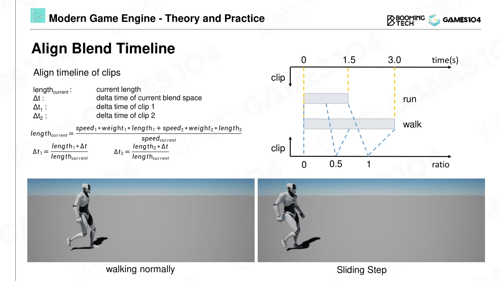
常见坑
两个片段长度不同却按各自时间播放 → 混合时脚部相位错乱 → 需按归一化时间对齐或使用 Sync Group。
权重计算未做 clamp → 速度超出范围时权重为负或大于 1 → 对权重做 clamp 到 [0,1]。
UE / Unity 落地
UE 的 Blend Space 中可设置“Sync Group”让多个片段时间同步。
Unity 的 Animator 中 Blend Tree 也有“Sync”选项。
033. Blend Space：把输入参数映射到多个片段
1D Blend Space：用一个输入值（如速度）在多个片段间混合。例如方向性移动中，玩家可以朝多个角度移动，可以用三个片段（左移、前移、右移）混合出任意角度。
2D Blend Space：用两个输入值（如横向速度和纵向速度）混合。课件指出，由于横向移动速度通常低于前向，角色进入跑步状态的条件不同，所以需要 2D 混合空间来同时处理方向和速度。
构造方法：把多个 1D Blend Space 正交放置，或直接在 2D 平面上放置多个片段，用重心坐标（Barycentric）计算权重。
骨骼遮罩混合（Skeleton Masked Blending）：有时只想让身体某部分参与混合，比如坐着鼓掌——下半身保持坐姿，上半身播放鼓掌。做法是给每根骨骼一个混合百分比（blend mask），形成遮罩。
叠加混合（Additive Blending）：把一个“差异片段”加到基础片段上，产生新片段。差异片段 = 目标姿态 - 基础姿态（在旋转上是四元数差）。适合点头、呼吸、受击反应等叠加动作。课件提醒：叠加混合更容易出现骨骼异常结果，因为差异片段可能不满足关节约束。
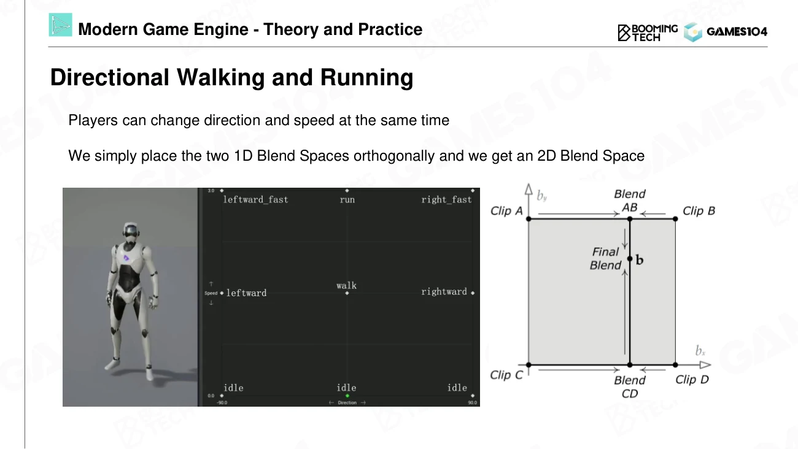
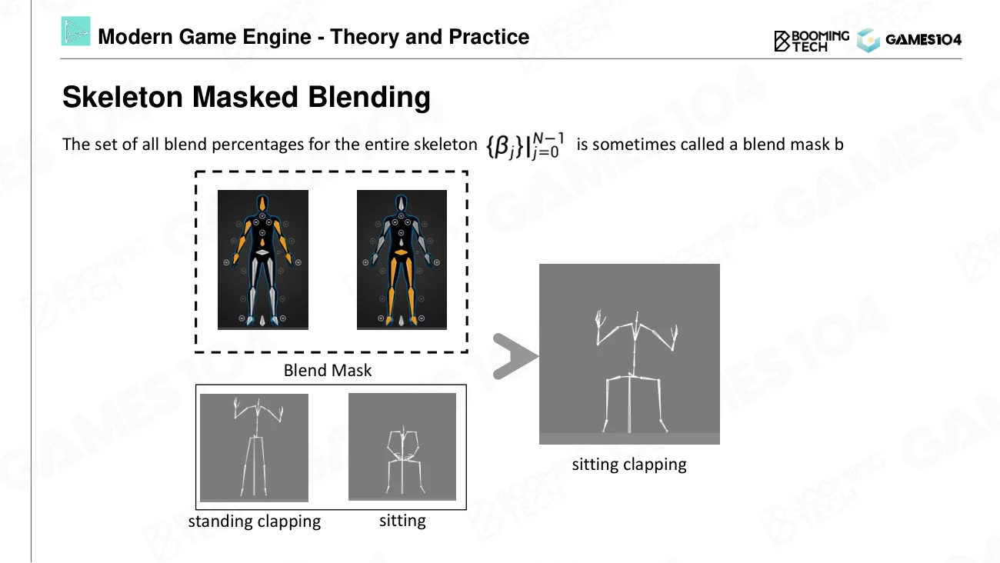
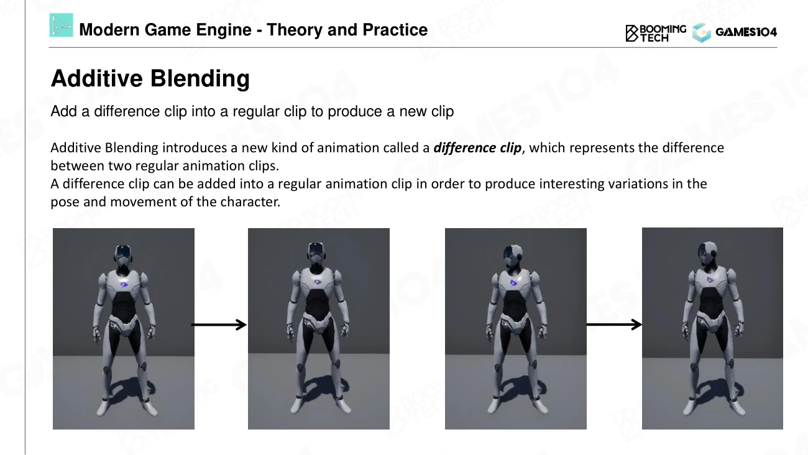
常见坑
遮罩权重未归一化或骨骼层级不一致 → 混合后姿态扭曲 → 检查遮罩的骨骼列表与权重。
叠加混合的差异片段包含位移 → 角色漂移 → 差异片段应只保留旋转和必要的局部位移。
UE / Unity 落地
UE 的 Blend Space 资产（1D/2D）直接对应课件概念；Layered blend per bone 节点对应骨骼遮罩混合。
Unity 的 Avatar Mask 对应骨骼遮罩；Additive Layer 对应叠加混合。
044. 动作状态机：管理有状态的动画切换
Blend Space 是“同步”的混合，但跳跃这类动作是有状态的：起跳、空中、落地，每个阶段播放不同片段。这时用动作状态机（Action State Machine, ASM）。
ASM 由节点（Node）和过渡（Transition）组成。节点类型包括 Blend Space 和 Clip；过渡定义从源节点到目标节点的条件。课件给出了伪代码结构：
class ActionStateMachineClipNode {
AnimationClip m_clip;
};
class ActionStateMachineTransition {
int m_source_node_index;
int m_target_node_index;
};
过渡类型有“直接弹出”（pop）和带条件的切换。切换时用交叉淡入淡出（Cross Fade）：在过渡时间内，从源片段逐渐淡出、目标片段逐渐淡入。两种常见方式：平滑过渡（要求两个片段都是循环动画且时间轴同步）和交叉淡入淡出曲线（不同曲线满足不同需求，如线性、缓入缓出）。
分层 ASM（Layered ASM）：让角色不同身体部位同时做不同动作，比如《鬼泣》中上半身攻击、下半身移动。每层有自己的 ASM，最后按遮罩混合。
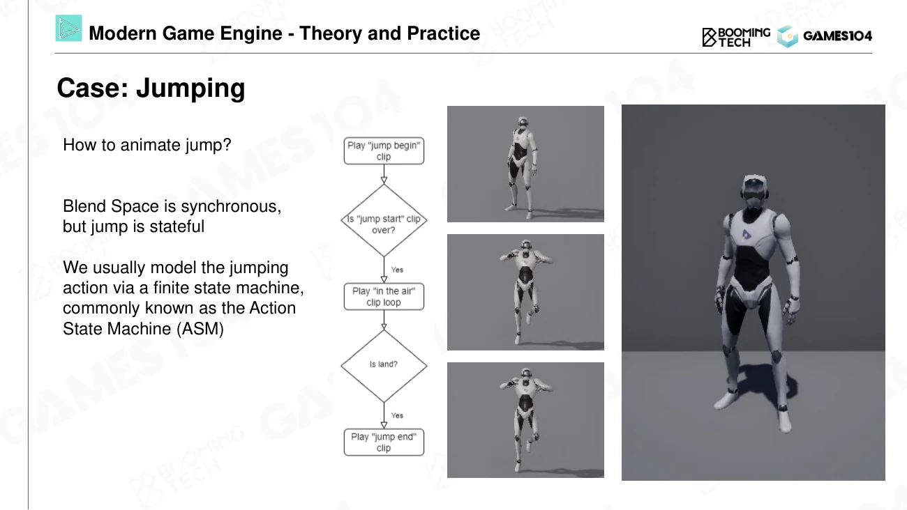
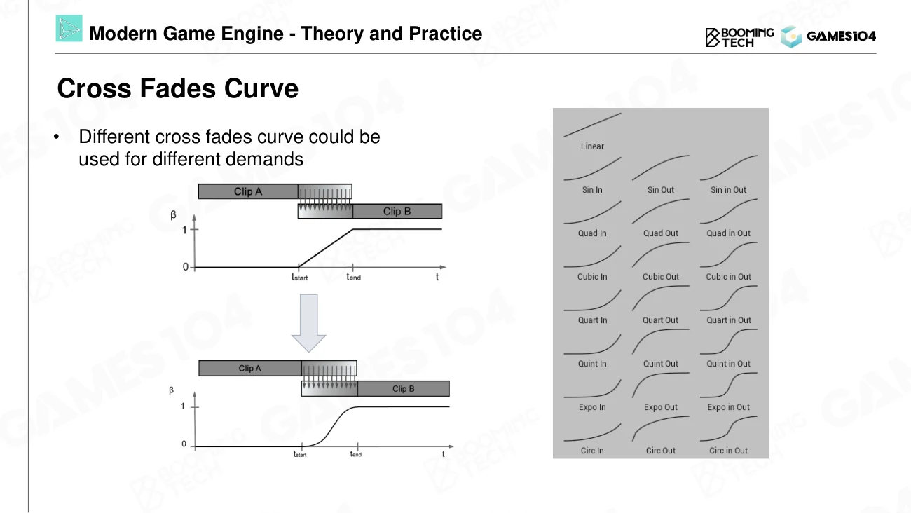
常见坑
过渡条件未加“已触发”标志 → 同一帧反复切换 → 在过渡开始时锁存条件。
交叉淡入淡出时间过长 → 动作响应迟钝 → 根据动作类型调整过渡时长（如受击要短）。
UE / Unity 落地
UE 的动画状态机（State Machine）中，State 是输出姿态的蓝图图，Transition 控制何时切换及如何混合。
Unity 的 Animator Controller 中，State 与 Transition 概念完全对应。
055. Blend Tree：用树形结构组织混合
当混合逻辑变复杂（多层 ASM、多个混合操作），用混合树（Blend Tree）来表达。课件用表达式树类比：\(a + (b \times c) + d \times (e + f)\) 可以表示成一棵树。
Blend Tree 的节点分两类：
- 终端节点（叶节点）：Clip、Blend Space、ASM；
- 非终端节点：二元 LERP 混合节点、三元 LERP、叠加混合节点等。
二元 LERP 节点：两个输入姿态按权重 \(w\) 插值。叠加混合节点：把第二个输入（通常是差异片段）加到第一个上。
用 Blend Tree 表达分层 ASM：例如 \(K\) 层 ASM 与 \(B\) 层 ASM 用 LERP 混合，再与 \(F\) 层、\(H\) 层按树形组合，最终输出一个姿态。
控制参数（Control Parameters）：Blend Tree 的权重来自命名变量，这些变量可在蓝图中更新，也可由游戏逻辑驱动。UE 的动画蓝图就是“输出最终姿态的蓝图图”，把 Clip 姿态或 ASM 结果作为输入，用混合节点组合。
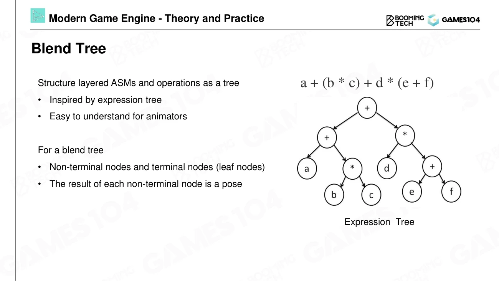
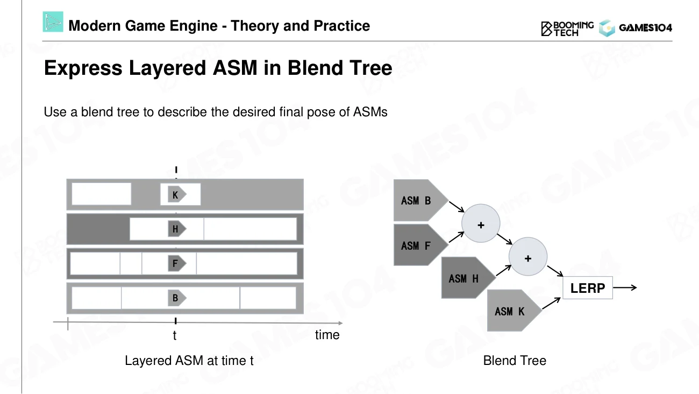
常见坑
树中权重未归一化 → 输出姿态幅度异常 → 在非终端节点处归一化权重。
控制参数未初始化 → 混合结果随机 → 在动画蓝图初始化时给默认值。
UE / Unity 落地
UE 的动画蓝图（Animation Blueprint）中，Blend Poses、Layered blend per bone 等节点构成 Blend Tree；控制参数是蓝图变量。
Unity 的 Animator 中 Blend Tree 是独立资产，参数由 Animator 参数驱动。
066. IK：让脚踩到地面、手摸到目标
反向运动学（Inverse Kinematics, IK）：已知末端执行器（End-effector）的目标位置，反解关节旋转。课件用“脚如何踩到地面”引入：角色在斜坡上行走时，脚需要贴合地面，这时用 IK 调整脚的位置。
两骨骼 IK：有解析解。给定大腿和小腿长度、目标位置，用余弦定理求出膝关节角度，再确定朝向。3D 空间中还需要一个参考向量（Reference Vector）来确定最终平面的朝向。
多关节 IK 更复杂：高维非线性、可能多解、计算量大。常用启发式算法：
- CCD（Cyclic Coordinate Descent）：从末端关节开始，逐个旋转关节使末端靠近目标，迭代直到收敛。优化版加入容差区域和欠阻尼角度缩放，避免震荡。
- FABRIK（Forward And Backward Reaching IK）：在位置空间迭代，先向前到达目标，再向后回推，重复直到收敛；可加入关节约束。
- Jacobian 矩阵：用雅可比矩阵表示关节旋转对末端位置的影响，迭代求解 \(\Delta \theta = J^{-1} \Delta x\)（或伪逆）。
多末端执行器：多个目标可能冲突，可用优先级或加权。课件还提到基于物理的方法（PBD）和深度学习，以及自碰撞避免、预测等挑战。
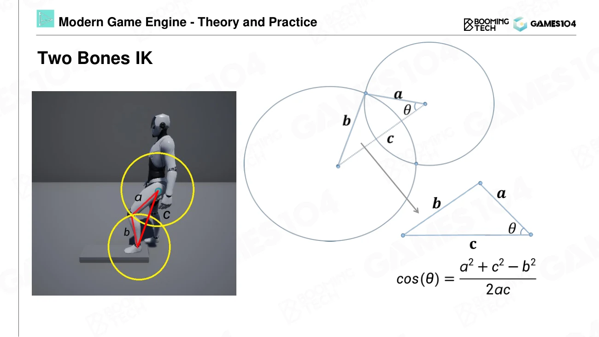
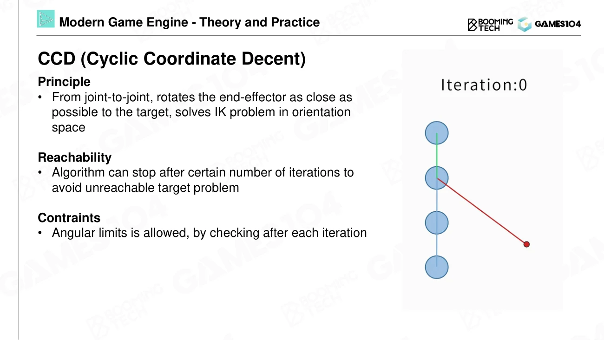
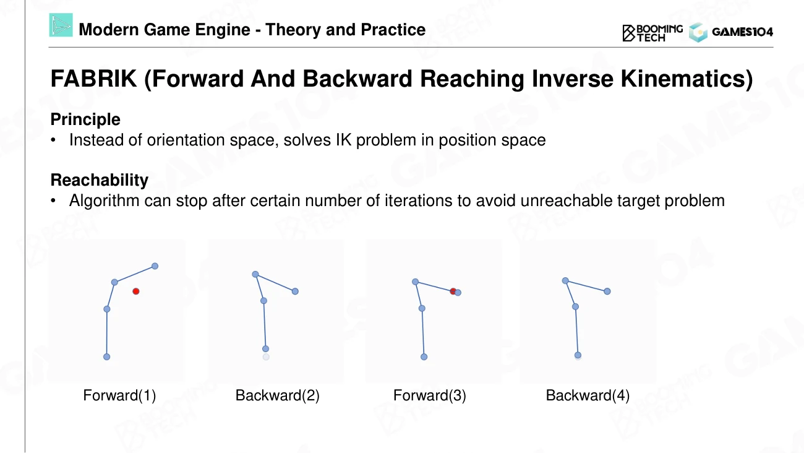
常见坑
IK 目标不可达 → 关节过度拉伸或抖动 → 先检查可达性，不可达时退化为朝向目标。
未加关节约束 → 膝盖反折 → 对关节角度做 clamp。
UE / Unity 落地
UE 有 Two Bone IK、FABRIK、CCDIK 等动画节点；Control Rig 可做更复杂的 IK。
Unity 的 Animation Rigging 包提供 Two Bone IK、Chain IK 等。
077. 面部动画与动画重定向
面部动画：人脸由复杂肌肉驱动，精度要求高。FACS（Facial Action Coding System） 把面部动作分解为动作单元（Action Units, AU），表情是 AU 的组合。实现方式：
- Morph Target（关键姿态混合）：只存储与中性脸不同的顶点偏移（叠加混合），按权重混合。简单混合可能出现问题（如睁眼+闭眼混合出奇怪结果），需要修正。
- UV 纹理动画：用一系列纹理贴图在简单头部模型上切换，适合卡通风格。
- 肌肉模型：基于物理，更精确但更复杂。
动画重定向（Retargeting）：让动画在不同角色间复用。流程：忽略源与目标关节的偏移，保持绑定姿态下的朝向，分别处理旋转、位移、缩放轨道；用骨盆高度对齐移动；重定向后用 IK 锁定脚部。不同骨架层级（如脊柱数量不同）需要特殊处理。未解决的问题包括自穿插、自接触约束、平衡等。
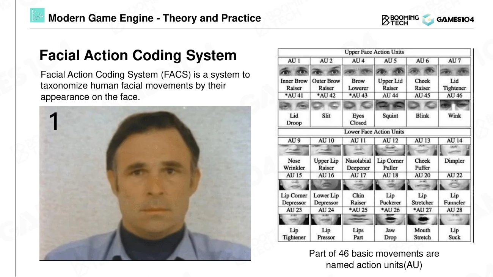
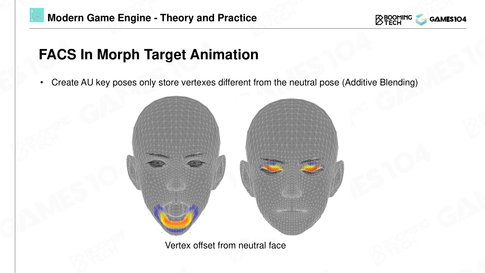
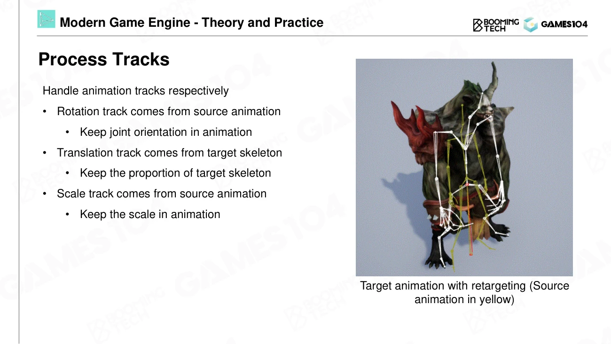
常见坑
Morph Target 权重之和超过 1 → 顶点过冲 → 对权重做归一化或限制。
重定向未处理绑定姿态差异 → 目标角色姿态扭曲 → 在重定向姿态下对齐朝向。
UE / Unity 落地
UE 的 Morph Target 对应面部 Blend Shape；Live Link Face 可驱动面部动画。
Unity 的 Blend Shape 对应 Morph Target；Retargeting 在 Humanoid 动画中自动处理。
引擎对照表
| 概念 / 效果 | Unreal Engine | Unity |
|---|---|---|
动画混合 | 动画蓝图中的 Blend Poses 节点 | Animator 中的 Blend Tree |
1D/2D Blend Space | Blend Space 资产 | 1D/2D Blend Tree |
骨骼遮罩混合 | Layered blend per bone 节点 | Avatar Mask + Layer |
叠加混合 | Apply Additive 节点 | Additive Layer |
动作状态机 | 动画状态机（State Machine） | Animator Controller 中的 State/Transition |
IK | Two Bone IK、FABRIK、CCDIK 节点 | Animation Rigging 包 |
面部动画 | Morph Target + Live Link Face | Blend Shape |
术语双语表
| English | 中文 | 说明 |
|---|---|---|
| Animation Blending | 动画混合 | 多个动画片段共同影响最终姿态的技术。 |
| LERP | 线性插值 | 按权重在两个值之间线性过渡。 |
| Blend Space | 混合空间 | 把输入参数映射到多个片段权重的数据结构。 |
| Skeleton Masked Blending | 骨骼遮罩混合 | 按骨骼设置混合权重，让不同部位播放不同动画。 |
| Additive Blending | 叠加混合 | 把差异片段加到基础片段上。 |
| Action State Machine (ASM) | 动作状态机 | 用节点和过渡管理有状态的动画切换。 |
| Cross Fade | 交叉淡入淡出 | 切换时源片段淡出、目标片段淡入。 |
| Blend Tree | 混合树 | 用树形结构组织混合操作。 |
| Inverse Kinematics (IK) | 反向运动学 | 已知末端目标位置反解关节旋转。 |
| FACS | 面部动作编码系统 | 把面部动作分解为动作单元的系统。 |
| Retargeting | 动画重定向 | 让动画在不同骨架间复用。 |
课后练习
01 走路速度 1.5 m/s，跑步速度 5.0 m/s，当前速度 3.0 m/s，求跑步片段的混合权重。
查看答案
提示：
用线性插值公式。
w_run = (3.0 - 1.5) / (5.0 - 1.5) = 1.5 / 3.5 ≈ 0.4286，走路权重 ≈ 0.5714。
02 简述骨骼遮罩混合与叠加混合的区别，并各举一个使用场景。
查看答案
提示：
从“哪些骨骼参与”和“差异片段”角度思考。
骨骼遮罩混合按骨骼设置权重，让不同身体部位播放不同动画，如坐着鼓掌（下半身坐姿、上半身鼓掌）；叠加混合把差异片段加到基础片段上，如站立时叠加点头动作。
03 动作状态机中，交叉淡入淡出有什么作用？两种常见方式是什么？
查看答案
提示：
考虑切换时的跳变。
交叉淡入淡出在过渡时间内让源片段淡出、目标片段淡入，避免切换跳变。两种方式：平滑过渡（要求两个片段都是循环动画且时间轴同步）和交叉淡入淡出曲线（不同曲线满足不同需求）。
04 两骨骼 IK 在 3D 空间中为什么需要参考向量？
查看答案
提示：
考虑平面的朝向。
两骨骼 IK 的几何解确定了一个平面，但 3D 空间中该平面可以绕骨骼轴旋转，需要参考向量确定最终平面的朝向，从而唯一确定姿态。
05 动画重定向时，为什么要用骨盆高度对齐移动并用 IK 锁定脚部？
查看答案
提示：
考虑不同角色腿长不同。
不同角色腿长不同，直接用源动画的位移会导致脚部滑动或悬空；用骨盆高度对齐移动可保持整体高度合理，再用 IK 锁定脚部使脚贴合地面，避免滑动。